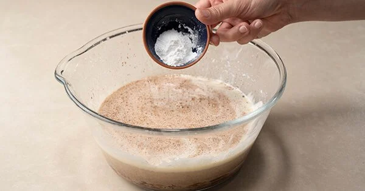

Damla Çikolatalı Kakaolu Kek Tarifi İçin Malzemeler
- 3
adet
yumurta
- 1,5
su bardağı
toz şeker
- 2
çay bardağı
süt
- 1
çay bardağı
ayçiçek yağı
- 2,5
su bardağı
un
(elenmiş)
- 2
tepeleme tatlı kaşığı
kakao
- 2
yemek kaşığı
çikolata kreması
(sürülebilir çikolata)
- 1
çay bardağı
damla çikolata
- 1
paket
kabartma tozu
Damla Çikolatalı Kakaolu Kek Tarifi Nasıl Yapılır?
-
Yumurtaları ve toz şekeri derin bir kapta bir mikser yada çırpma teli yardımıyla toz şeker tamamen eriyip kabarana kadar çırpın.
-
Sıvıyağı ilave edin.
-
Sütü ekleyin.
-
Çikolata kremasını ilave edin.
-

Kabartma tozunu ekleyin.
-
Kabartma tozunu ekleyin.
-
Kakaoyu ekleyin.
-
Unu ilave edin ve bir spatula yada çırpma teli yardımıyla karıştırın.
-
Damla çikolataları da ilave edip son kez karıştırın.
-
Tereyağı ile yağladığınız kek kalıbına boşaltın ve 180 derece de önceden ısınmış alt-üst ayarlı fansız fırında 35- 40 dakika pişirin.
-
İçi nemli, yumuşacık damla çikolatalı kekiniz hazır. Afiyet olsun!